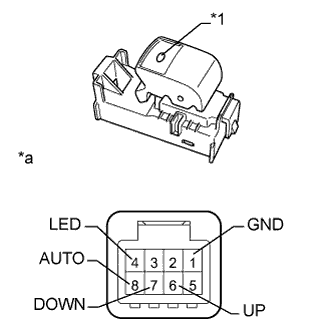

ПЕРЕКЛЮЧАТЕЛЬ ЭЛЕКТРИЧЕСКОГО СТЕКЛОПОДЪЕМНИКА ЗАДНЕЙ ДВЕРИ > ПРОВЕРКА |
| 1. ПРОВЕРЬТЕ ПЕРЕКЛЮЧАТЕЛИ ЭЛЕКТРИЧЕСКИХ СТЕКЛОПОДЪЕМНИКОВ ЗАДНИХ ДВЕРЕЙ |
|  |
Измерьте сопротивление в соответствии со значениями, приведенными в таблице ниже.
| Контакты для подключения диагностического прибора | Положение переключателя | Заданные условия |
| 6 (UP) - 1 (GND) | Ручной подъем | Менее 1 Ом |
| 7 (DOWN) - 1 (GND) | Ручное опускание | Менее 1 Ом |
| 8 (AUTO) - 1 (GND) | Автоматический подъем/опускание | Менее 1 Ом |
Проверьте, горит ли светодиод.
Подайте напряжение аккумуляторной батареи на переключатель и убедитесь, что светодиод включается.
| Условия измерений | Заданные условия |
| Положительный (+) вывод аккумуляторной батареи → контакт 4 (LED) Отрицательный (-) вывод аккумуляторной батареи → контакт 1 (GND) | Светодиод светится |
| *1 | Светодиод |
| *a | Устройство с неподсоединенным жгутом проводов (переключатель электрического стеклоподъемника задней двери) |